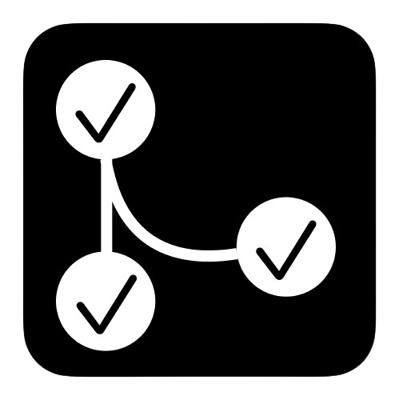

- contact me via eMail: hier_ist_moritz [at] t-online.de!
Portfolio
My Bank Keeps On Undermining Anti-Phishing Education
Small essay about Usable Security gone wrong
Blogpost
.
Archive_todo.txt
Archives completed tasks from todo.txt to an external file
Script in Shell
.

todo.txt-conflict-resolver
Tool for automatically resolving sync conflicts of todo.txt files
Script in Go
Hard Skills
- Programming Languages: worked with most common (like Python, Go, Rust, C, Java), quickly in adapting new languages and frameworks as needed.
- Cybersecurity: Studied various modules during university (e.g., IT-Forensics, Data Networks, Operating Systems, and Security - listed in transcript), and took additional courses informally. Actively participate in Capture The Flag (CTF) competitions.
- Languages: German (native), English (Fluent), French (B1), Norwegian (A2).
Soft Skills
- Communication and Collaboration: Able to explain complex concepts to (non-technical) stakeholders. I learned this ability espacially during my time in the debating club.
- Analytical Thinking: Able to identify patterns and anomalies in system behavior or logs.
- Adaptability and Curiosity: It is easy for me to dig myself into new environments and technologies. Constantly exploring new vulnerabilities and tools.
- Stress Resistence: Developed strong stress management skills and resilience through a farming background, where long hours, unexpected challenges, and time-critical decisions were part of daily life.
Work Experience
- Working student in System Administration, Faculty for Mathematics and Informatics, 2021-2023
- Service Technician, IT-Haus GmbH, 2019-2020, 2021
Education
- B.A., Computer Science, Saarland University, 2021-2024
- before: studies in Business Informatics, Saarland University, 2020-2021